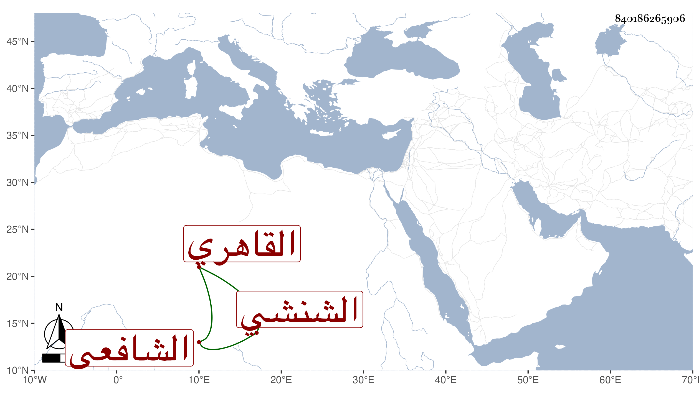

0902Sakhawi.DawLamic.ITO20230111-ara1.EIS1600.840186265906
Biography ID: 840186265906
559
محمد بن علي بن محمد البدر بن القاضي . نور الدين بن الشرف الشنشي الأصل القاهري الشافعي أحد شهود الصالحية وسوق الرقيق . ممن سمع في البخاري بالظاهرية وعلى شيخنا قبل ذلك في سنة أربعين في الدارقطني وكان يسكن جوار جامع الغمري وله تصوف في البيبرسية ولم يكن بالمرضي . مات في ليلة الثلاثاء رابع عشر صفر سنة ست وخمسين عفا الله عنه .
